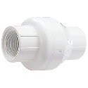
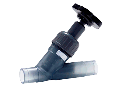
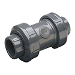
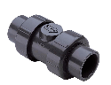

Check Valves
At Harrington, we supply industry recognized check valves, available in an extensive range of brands, styles, connection types, materials, and specifications. These valves are essential for preventing backflow. Our material options include PVC, PTFE, Polypropylene, CPVC, PVDF, and PFA. Choose your product to request a quote and get purchasing information.

NDS 1-1/2" Spring Check Valve, PVC Body with Socket Endsper EA · Sign in for price- NDS 2" Spring Check Valve, PVC Body with FPT Endsper EA · Sign in for price
- NDS 3/4" Spring Check Valve, PVC Body with Socket Endsper EA · Sign in for price
- NDS 1" Spring Check Valve, PVC Body with Socket EndsCall for availabilityAsk a branch
- NDS 1-1/2" Spring Check Valve, Clear PVC Body with Socket Endsper EA · Sign in for price
- NDS 2" Spring Check Valve, PVC Body with Socket Endsper EA · Sign in for price
- NDS 1-1/2" Spring Check Valve, PVC Body with Socket Endsper EA · Sign in for price
- NDS 1-1/2" Spring Check Valve, Clear PVC Body, with S Endsper EA · Sign in for price
- NDS 1" Swing Check Valve, PVC Body with Socket Endsper EA · Sign in for price
- NDS 1-1/2" Swing Check Valve, PVC Body with FPT Endsper EA · Sign in for price
- NDS 2" Swing Check Valve, PVC Body with Socket Endsper EA · Sign in for price
- NDS 3" Swing Check Valve, PVC Body with Socket Endsper EA · Sign in for price
- NDS 3/4" Swing Check Valve, PVC Body with Socket Endsper EA · Sign in for price
- NDS 1" Swing Check Valve, PVC Body with Socket Endsper EA · Sign in for price
- NDS 1-1/2" Swing Check Valve, Clear PVC Body with Socket Endsper EA · Sign in for price
- NDS 2" Swing Check Valve, PVC Body with Socket Endsper EA · Sign in for price
- NDS 3" Swing Check Valve, PVC Body with Socket Endsper EA · Sign in for price

Georg Fischer Type-301/304 Series, 1/2" Y-Check Valve PVC Body with Spigot Endsper EA · Sign in for price- Georg Fischer Type-301/304 Series, 3/4" Y-Check Valve PVC Body with Spigot Endsper EA · Sign in for price
- Georg Fischer Type-301/304 Series, 1" Y-Check Valve PVC Body with Spigot Endsper EA · Sign in for price
- Georg Fischer Type-301/304 Series, 1-1/4" Y-Check Valve PVC Body with Spigot Endsper EA · Sign in for price
- Georg Fischer Type-301/304 Series, 1-1/2" Y-Check Valve PVC Body with Spigot Endsper EA · Sign in for price
- Georg Fischer Type-301/304 Series, 2" Y-Check Valve PVC Body with Spigot Endsper EA · Sign in for price
- Georg Fischer Type-301/304 Series, 3" Y-Check Valve PVC Body with Spigot Endsper EA · Sign in for price
- Georg Fischer Type-301/304 Series, 1/2" Y-Check Valve PVC Body with Spigot Endsper EA · Sign in for price
- Georg Fischer Type-301/304 Series, 3/4" Y-Check Valve PVC Body with Spigot Endsper EA · Sign in for price
- Georg Fischer Type-301/304 Series, 1" Y-Check Valve PVC Body with Spigot Endsper EA · Sign in for price
- Georg Fischer Type-301/304 Series, 1-1/2" Y-Check Valve PVC Body with Spigot Endsper EA · Sign in for price
- Georg Fischer Type-301/304 Series, 2" Y-Check Valve PVC Body with Spigot Endsper EA · Sign in for price
- Georg Fischer Type-301/304 Series, 3" Y-Check Valve PVC Body with Spigot Endsper EA · Sign in for price

Spears 2-1/2" True-Union Ball Check Valve, PVC Body, with FPT Endsper EA · Sign in for price- Spears 2-1/2" True-Union Ball Check Valve, CPVC Body, with FPT Endsper EA · Sign in for price
- Spears 3" True-Union Ball Check Valve, PVC Body, with FPT Endsper EA · Sign in for price
- Spears 3" True-Union Ball Check Valve, CPVC Body, with FPT Endsper EA · Sign in for price
- Spears 4" True-Union Ball Check Valve, PVC Body, with FPT Endsper EA · Sign in for price

Spears 4" True-Union Ball Check Valve, CPVC Body with FPT Endsper EA · Sign in for price- Spears 2-1/2" True-Union Ball Check Valve, PVC Body with Socket Endsper EA · Sign in for price
- Spears 2-1/2" True-Union Ball Check Valve, CPVC Body, with S Endsper EA · Sign in for price
- Spears 3" True-Union Ball Check Valve, PVC Body with Socket Endsper EA · Sign in for price
- Spears 3" True-Union Ball Check Valve, CPVC Body with Socket Endsper EA · Sign in for price